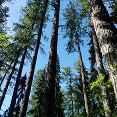
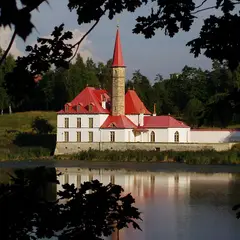
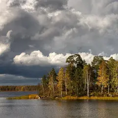
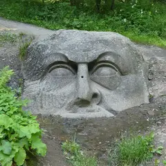
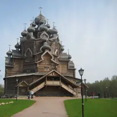
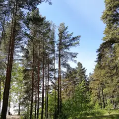
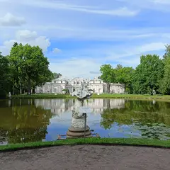

Подборка редакции · Петербург
За город из ленты
Пригороды без толп Петергофа: золотая лиственничная роща у Рощина, белый земляной замок в Гатчине, скалы Монрепо над заливом, каменная Голова в Сергиевке, деревянные «Кижи» на Неве и закат в Комарове.
- 8 мест
- до 1 500 ₽ на человека
Что в подборке 8

у пос. Рощино, Выборгский р-н
Новое
Корабельная роща из лиственниц, посаженная при Петре: высоченные стволы вдоль реки Рощинки, а в октябре всё становится золотым. Электричка с Финляндского до Рощино, дальше около 3 км пешком.
Подробнее и маршрут: Линдуловская рощаПозвать сюда: Линдуловская роща
Фото: Hedgehogarrow, CC BY-SA 4.0 · Wikimedia Commons

Гатчина, ул. Чкалова, 87
Новое
Белый «замок» с острой башней на берегу Чёрного озера, построенный из утрамбованной земли. Гатчина — час на электричке с Балтийского вокзала, парк вокруг бесплатный.
Подробнее и маршрут: Приоратский дворецПозвать сюда: Приоратский дворец
Фото: Alexander Konovalenko, CC BY-SA 2.5 · Wikimedia Commons

Выборг, парк Монрепо
Новое
Пейзажный парк на гранитных скалах над Выборгским заливом: мостики, остров-некрополь и вода между соснами. «Ласточка» с Финляндского — 1 час 15 минут; весной парк закрывают на просушку.
Подробнее и маршрут: Парк МонрепоПозвать сюда: Парк Монрепо
Фото: Pavlikhin, CC BY-SA 4.0 · Wikimedia Commons

Петергоф, Ораниенбаумское ш., 2
Новое
Дикий парк рядом с Петергофом без толп: дворец Лейхтенбергских, каменная Голова богатыря у ручья и тропы к заливу. Вход свободный, электричка с Балтийского до Университетской.
Подробнее и маршрут: Парк СергиевкаПозвать сюда: Парк Сергиевка
Фото: Екатерина Борисова, CC BY-SA 4.0 · Wikimedia Commons

Свердловское г.п., Всеволожский р-н
Новое
Деревянный многоглавый храм на берегу Невы, повторяющий церковь в Кижах, и этнографическая усадьба вокруг. От «Рыбацкого» — автобус; вход на территорию свободный.
Подробнее и маршрут: Усадьба БогословкаПозвать сюда: Усадьба Богословка
Фото: User:Skydrinker, CC BY-SA 3.0 · Wikimedia Commons

пос. Комарово, Приморское ш., спуск к заливу от ж.-д. станции «Комарово»
Новое
Длинный песчаный берег с соснами на склоне и валунами в воде, у кромки — рыбацкие лодки; солнце садится прямо в залив. Рядом «Будка» Ахматовой. Электричка с Финляндского вокзала до «Комарово», дальше пешком к заливу.
Подробнее и маршрут: Комаровский берегПозвать сюда: Комаровский берег
Фото: GAlexandrova, CC BY-SA 4.0 · Wikimedia Commons

Ломоносов, Дворцовый пр., 48
Новое
Тихая усадьба у залива: Китайский дворец, пергола в виноградных листьях и олени; утром и вечером вход бывает свободным.
Подробнее и маршрут: ОраниенбаумПозвать сюда: Ораниенбаум
Фото: Екатерина Борисова, CC BY-SA 4.0 · Wikimedia Commons
Кронштадт, Якорная площадь, 1
Новое
Город-крепость на острове: величественный Морской собор, каналы, доки и тихие улицы с флотской историей — поездка на день.
Подробнее и маршрут: Кронштадт: Якорная площадь и Морской соборПозвать сюда: Кронштадт: Якорная площадь и Морской собор
Фото: Валера37526, CC BY-SA 4.0 · Wikimedia Commons

Как позвать
- Выбери план, место или событие — в карточке адрес, цены и маршрут в Яндекс Картах.
- Нажми «Позвать сюда» — соберётся приглашение-игра для свидания или голосование для компании.
- Отправь ссылку в любой мессенджер: тебе ответят, а компания отметит, куда и когда может. Бесплатно и без регистрации.